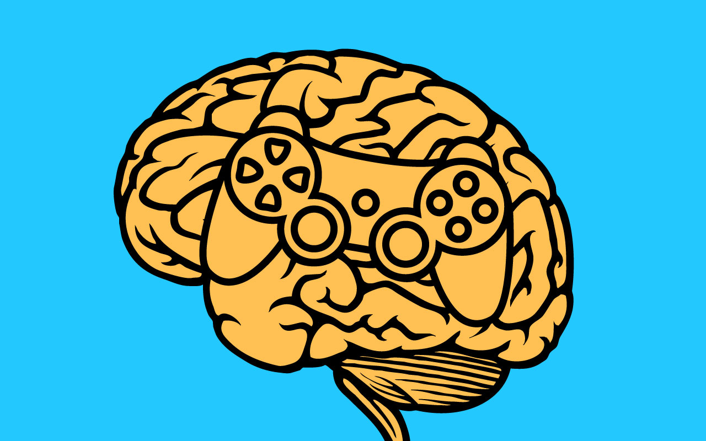

Everyone knows video games can be addicting,  most are specifically designed that way in order to make money, but why do we get addicted and are easily be manipulated to play more. The simple explanation is because humans seek enjoyment and would rather be doing something we enjoy that anything else. People tend to enjoy things that are fun, are a form of play, have a set of rules and are interactive, these aspects (and many more) are what cause us to seek pleasure.